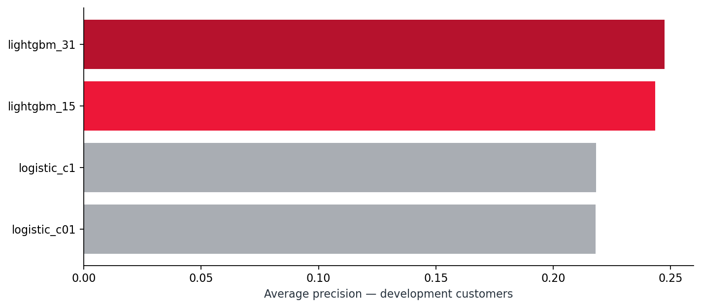
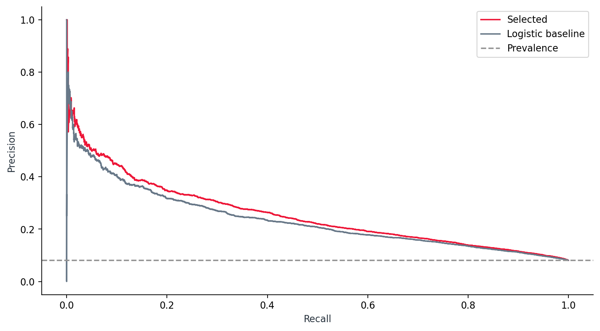
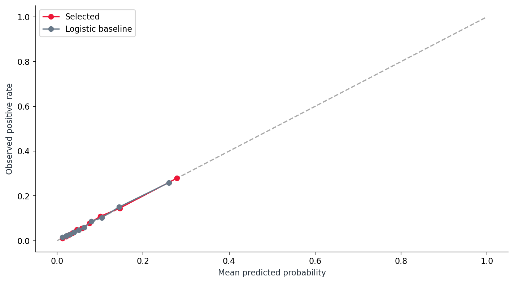
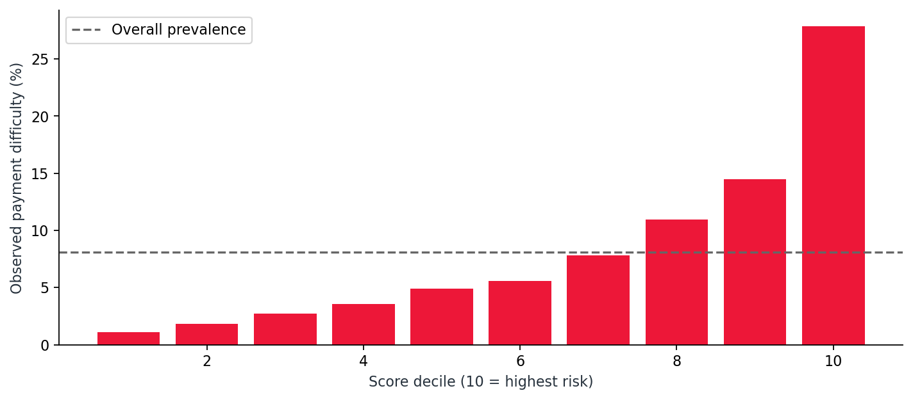
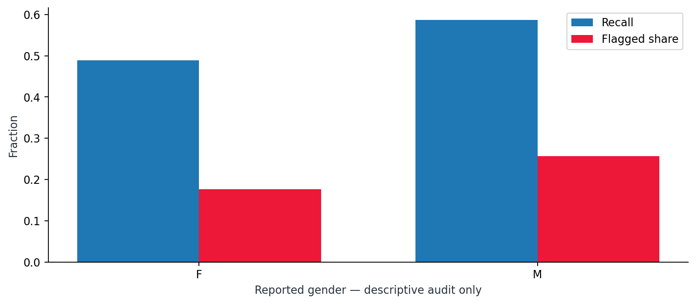

01 / BUSINESS UNDERSTANDING
Prioritize review with evidence
How should a limited review capacity be prioritized? The model estimates payment difficulty under the competition TARGET. The source defines a delay exceeding X days in at least one of the first Y installments, without disclosing X and Y. The study supports risk investigation; it does not determine approval, interest rates or credit limits.
02 / DATA UNDERSTANDING & PREPARATION
Building on the ingestion project
307,511 labeled applications; 24,825 positive cases (8.07%). The existing ETL export contains matching customer IDs and labels. The analytical layer retrieves fields already present in HC_APPLICATION and rebuilds historical aggregates from original CSV files. Unlabeled application_test is not used for evaluation.
Relative-day-zero cutoff: bureau credit and update, previous decision, installment due date and payment must be on or before the application. Seventeen bureau records and 2,905 future or undated installment records were excluded. Gender and identifiers are excluded from features; employment sentinel 365243 is treated as missing. Tables remain retrospective snapshots: these filters do not establish operational availability of every field.
Original ingestion project ↗03 / MODELING
Compare, calibrate and freeze
Four candidates: two logistic regressions and two LightGBM models. Selected by development average precision: lightgbm_31. Separate customers for training (184,506), development (30,751), calibration (30,751), policy (15,375) and testing (46,128). Training-only imputation/scaling; sigmoid calibration on another group; policy-score 80th percentile threshold. Final testing follows freezing. No global application calendar is provided: this is stratified customer validation, not temporal validation.

04 / EVALUATION
Results on held-out customers
| Model | AP | ROC AUC | KS | Brier ↓ | Precision@20% | Recall@20% | Lift@20% |
|---|---|---|---|---|---|---|---|
| lightgbm_31 | 0.255 | 0.764 | 0.396 | 0.067 | 21.2% | 52.5% | 2.62× |
| Logistic baseline | 0.235 | 0.749 | 0.376 | 0.068 | 20.5% | 50.7% | 2.53× |
AP = average precision. Test prevalence: 8.1%. Metrics computed on 46,128 customers excluded from selection, calibration and policy. One split, no confidence intervals.


Frozen threshold: 0.117; flagged share: 20.4%; precision: 21.0%; recall: 53.1%. This threshold does not guarantee a future 20% queue.

05 / HISTORICAL CAPACITY SCENARIO
Review capacity and risk concentration
Choose a fraction of test customers by ranking. This historical diagnostic is separate from the frozen threshold and does not guarantee real intervention outcomes.
06 / LIMITATIONS & NEXT STEPS
Limits and next step
One seed and one split; historical performance without temporal testing, demonstrated ROI or loss reduction. External scores are anonymized and hard to explain. Age remains an input. Excluding gender does not establish fairness: proxy variables exist. The repository includes a descriptive gender audit, which does not establish fairness or regulatory suitability. Before a pilot, validate availability, time, drift, calibration, impacts and credit policy with specialists.
